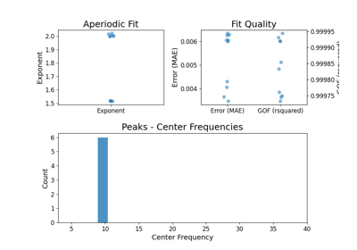
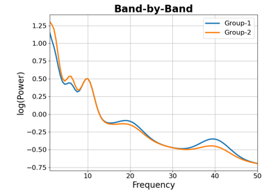

specparam.data.periodic.get_band_peak¶
- specparam.data.periodic.get_band_peak(model, band, select_highest=True, threshold=None, thresh_param='PW', attribute='converted')[source]¶
Extract peaks from a band of interest from a model object.
- Parameters:
- modelSpectralModel
Object to extract peak data from.
- bandtuple of (float, float)
Frequency range for the band of interest. Defined as: (lower_frequency_bound, upper_frequency_bound).
- select_highestbool, optional, default: True
Whether to return single peak (if True) or all peaks within the range found (if False). If True, returns the highest power peak within the search range.
- thresholdfloat, optional
A minimum threshold value to apply.
- thresh_param{‘PW’, ‘BW’}
Which parameter to threshold on. ‘PW’ is power and ‘BW’ is bandwidth.
- attribute{‘fit’, ‘converted’}
Which version of the peak parameters to extract data from.
- TODO
- Returns:
- peaks1d or 2d array
Peak data. Each row is a peak, as [CF, PW, BW].
Examples
Select an alpha peak from a fit model object ‘model’, selecting the highest power alpha:
>>> alpha = get_band_peak(model, [7, 14], select_highest=True)
Select beta peaks from a model object ‘model’, extracting all peaks in the range:
>>> betas = get_band_peak(model, [13, 30], select_highest=False)
Examples using specparam.data.periodic.get_band_peak¶

11: Further Analysis

Band-by-Band